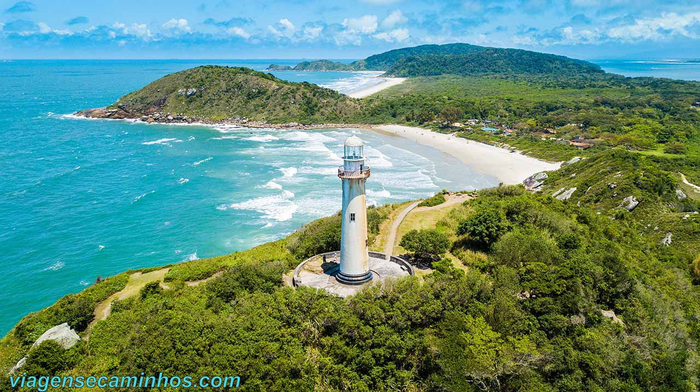

Lugares que você precisa conhecer
Bariloche
Bariloche é uma cidade localizada em meio a bosques milenares, montanhas cobertas de neve e lagos cristalinos na província do Rio Negro, na Argentina. É um cartão postal da nossa Patagônia. Uma cidade anfitriã por excelência e repleta das belezas naturais mais importantes do país.

Ilha do mel
Os principais cartões postais da Ilha do Mel - PR exigem uma boa caminhada, mas a recompensa fica por conta das lindas paisagens panorâmicas de toda a ilha. Com mais 35 Km de faixa de areia e aceso limitado de turistas, a Ilha do Mel possuí suas praias muito limpas e preservadas.
Crítica de Filmes
É até difícil acreditar que The Flash finalmente chegou aos cinemas.
É até difícil acreditar que The Flash finalmente chegou aos cinemas. Ele foi, originalmente, anunciado em 2014, com previsão de lançamento para 2018. Desde então, surgiram adiamentos, duas versões de Liga da Justiça, duas versões de Esquadrão Suicida… Isso sem contar as 9 temporadas de uma série com outro Flash. E a situação piorou com as diversas polêmicas e supostos crimes de seu protagonista, Ezra MIller. Ou seja, virou uma lenda urbana tipo o Superman do Nicolas Cage - que é, inclusive, referenciado nesse filme, (não é spoiler, o diretor já revelou). Mas The Flash é uma realidade que está difícil de escapar.Qual é a história de The Flash?Dando continuidade aos acontecimentos de Liga da Justiça, o público acompanha Barry Allen (Ezra Miller) tentando conciliar a rotina comum com a vida secreta de um super-herói. Porém, ele descobre que tem a capacidade de viajar no tempo e decide salva.
Fonte: Adorocinema

Ótimo para se ver uma vez
É difícil encontrar uma pessoa que não tenha se apaixonado ou ficado impressionado com Homem-Aranha no Aranhaverso (2019). Essa animação vencedora do Oscar conquistou o coração dos fãs da Marvel ao apresentar o jovem Miles Morales descobrindo seus poderes como um herói e, claro, pela experiência visual deslumbrante que mistura diferentes estilos de animação e parece ter sido tirado diretamente das histórias em quadrinhos para as telonas. Levando tudo isso em conta, Homem-Aranha: Através do Aranhaverso chega aos cinemas com a responsabilidade em manter a qualidade (ou superar) do primeiro.O sucesso de Aranhaverso teve bastante influência nas narrativas de multiverso e realidade alternativa que tomaram Hollywood nos últimos anos, especialmente no Universo Cinematográfico Marvel com Loki (2021), Homem-Aranha: Sem Volta para Casa (2021) e Doutor Estranho no Multiverso da Loucura (2022), e etc.